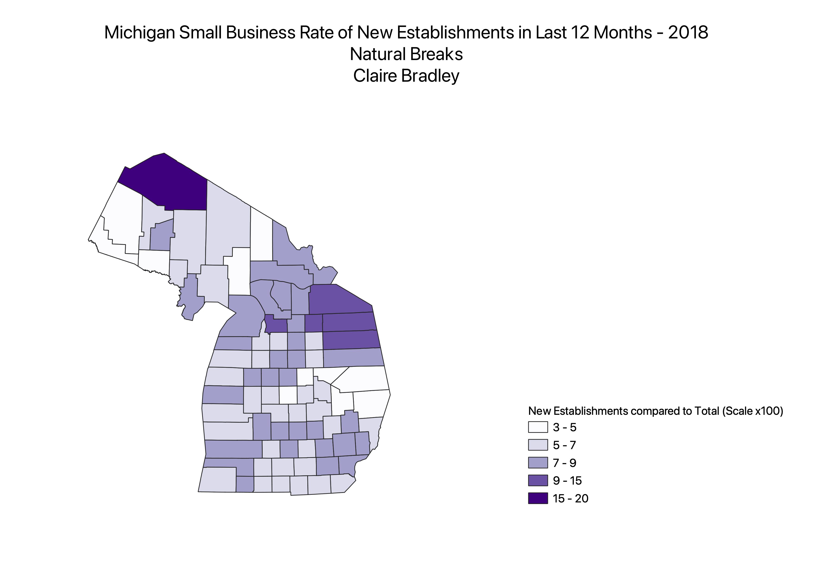
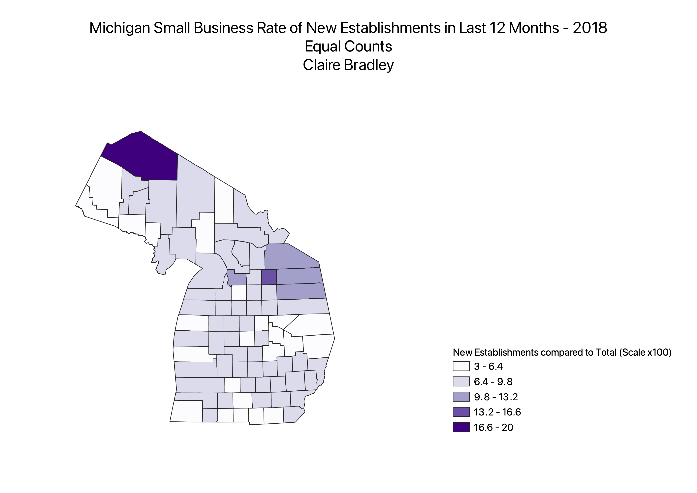
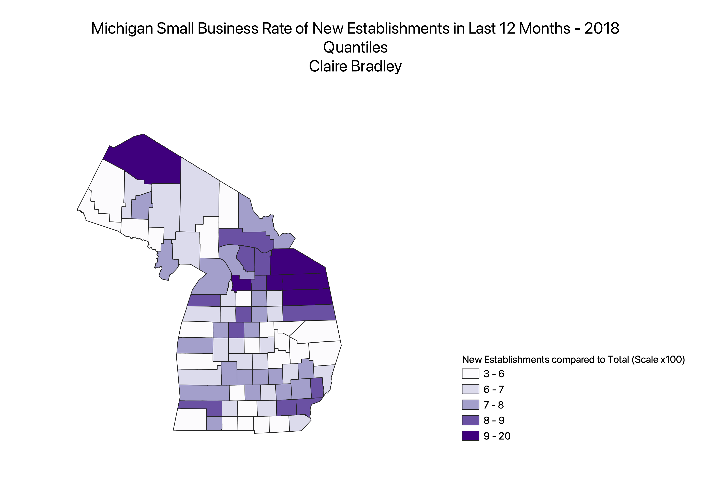

Michigan New Small Business Rates in the Past 12 Months
Ratio Created: New Small Businesses/Total Small Businesses Per County
2018 Census Data
Natural Breaks
This mode of classification creates easy to read numbers but the width of legend entries is distorted as the number of businesses climbs because there are less counties that fit that category/color.

Equal Counts
This map solves the issue of unequal distribution but the numbers are broken into a way that is not useful for this data because there cannot be part of a small business.

Quantiles
This map does the best job of evenly spreading out the color but distorts the amount of businesses needed to "qualify" for darker color counties because the last subset is so large.
